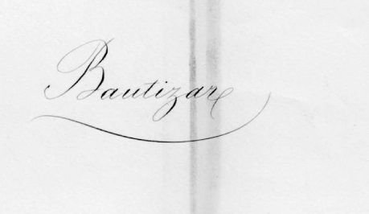
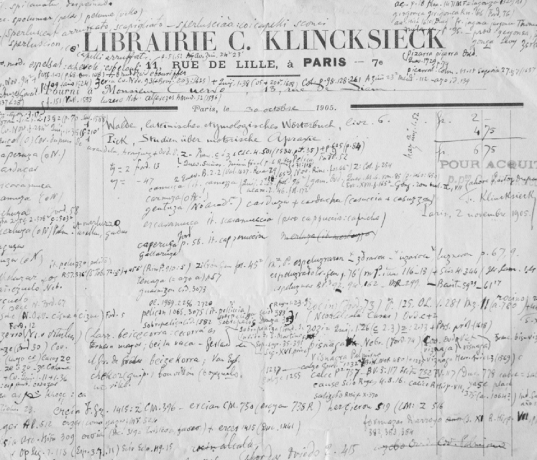

Bello, Andrés. La vida de Bello se desenvuelve en tres ciudades claves en su formación y en su obra: Caracas, donde nace en 1781, Londres que es su morada desde 1810 hasta 1829 y Santiago de Chile, ciudad que va a ser el testigo de su gran acción cultural y el lugar donde ve la luz la gran mayoría de sus escritos; aquí muere el 15 de octubre de 1865. R. J. Cuervo fue un consagrado estudioso y difusor de la doctrina de Andrés Bello. En las Notas a la Gramática de Bello hay un marcado empeño de actualizarlo, arrojando sobre su obra la luz de los sistemas historicistas y comparatistas más en boga; pero sobre todo hay una íntima admiración y un afecto ferviente hacia el maestro: “¡Ojalá consiguiera –exclama entusiasmado D. Rufino– que el nombre de Bello fuera siempre el símbolo de la enseñanza científica del castellano, como hasta hoy lo ha sido, y que su obra se conservase en las manos de la juventud como expresión de las doctrinas más comprobadas y más recibidas entre los filólogos!”[1]. Los nombres de Bello y de Cuervo se encuentran vinculados en esta obra, pero también en la Casa de Cuervo donde funciona el Seminario Andrés Bello.
Bibliografía de Cuervo. Con el título de Bibliografías de don Miguel Antonio Caro por Víctor E. Caro y de don Rufino José Cuervo, por Augusto Toledo, la Academia Colombiana de Historia publicó en 1945 un primer antecedente bibliográfico. Posteriormente, en 1951, Rafael Torres Quintero publicó la Bibliografía de Rufino José Cuervo en la Series Minor, núm. 2 del ICC, que permitió con claridad organizar el conjunto de las Obras de Cuervo que editaría unos años más tarde con Fernando Antonio Martínez. Este mismo repertorio apareció en 1954 en el primer volumen de la serie “Filólogos Colombianos”. En el 2005, el Departamento de Bibliografía del Icc publicó “Rufino José Cuervo, 150 años de bibliografía” de Hugo Leonardo Pabón con la colaboración de Stella Lamprea y Martha Sánchez e introducción de Edilberto Cruz Espejo.
Biblioteca Nacional de Colombia. En la cláusula quinta del Testamento de Cuervo se señala: “Lego a la República de Colombia los impresos, libros y manuscritos que existen en mi domicilio de París, a condición y con el objeto de que sean colocados y conservados en la Biblioteca Nacional de Bogotá para uso del público… Pongo además por condición que estos libros han de conservarse siempre juntos”[2]. Efectivamente la Biblioteca Nacional estableció el “Fondo Cuervo”, con los 5. 731 ejemplares, que se caracteriza por contar con las obras más representativas de la lingüística y la filosofía de siglo xix. Asimismo, es muy rico en clásicos españoles, latinos, griegos, alemanes e ingleses. La Biblioteca Nacional participa activamente en la conmemoración del centenario del fallecimiento de Cuervo.
Biblioteca Nacional de París. Del primer viaje a París, Cuervo le escribe a M.A. Caro: “No he visto todavía la biblioteca de París, y no tengo gana de verla, porque no puede hacer uno más que ver un cúmulo de libros que lo mismo da que fueran pintados, pues ni siquiera podría uno hojear algo que le llamara la atención”[3]. Sin embargo pasó allí muchas de las horas de sus veintinueve años radicado en París consultando sus distintos fondos. En la cláusula quinta del Testamento de Cuervo aparece una exclusión que dice “Excluyo, además, de los libros que lego a la República de Colombia, los siguientes que lego a la Biblioteca Nacional de París”[4]. A continuación hay un listado de 31 referencias, muchas de ellas de varios volúmenes.
Bibliotecario. Aunque de manera provisional, mientras se recibía la respuesta de la nota oficial que se había dirigido a la Real Academia Española, R. J. Cuervo fue elegido Bibliotecario, y por varios años fue el custodio de la recién nacida Biblioteca de la Academia Colombiana.
Bonté, Léocadie Marie. Dice José J. Ortega Torres, que después dela muerte de Ángel Cuervo, “Siguió solo, quince años más… Lo rodeaba de solicitudes, tiernas, sí, pero de manos extrañas, una vieja ama de llaves, Leocadia María Bonté, que cuantos la conocieron nos pintan viva, locuaz, gruñona y buena como el pan de corteza dura, cual las viejas criadas del teatro de Molière”[5]. Cuervo la menciona en el testamento, en las cláusulas sexta y séptima dejándole “en prenda de gratitud por la honradez con que nos ha servido” el usufructo de la casa en “que habitaron y murieron mis padres” y “todos los muebles y objetos que se hallaren el día de mi muerte en mi domicilio”[6]. Cuervo lució la condecoración de Caballero de la Legión de Honor, pedida para él por Gaston Paris, por mera deferencia a Marie, quien se la cosió fuertemente en la solapa, pero que fue arrancada y rechazada con patriótica indignación cuando Francia reconoció la separación de Panamá. De su ama de llaves Cuervo decía que era “el más honorable ciudadano francés con quien había tratado”.
Bosque, Ignacio. El más ilustre gramático de la actualidad, director de la Gramática descriptiva (1999), del Redes, Diccionario combinatorio del español contemporáneo (2004) y de la Nueva gramática de la lengua española de la Asociación de Academias (2009), nos dice: “El Diccionario de construcción y régimen de la lengua castellana de Rufino José Cuervo es una de las obras más importantes de la filología hispánica de todos los tiempos. Frente a un diccionario como los que habitualmente manejamos, el dcr no solo proporciona información sobre lo que significan las palabras, sino que nos muestra con sorprendente detalle la forma en que se combinan para construir oraciones. Las acepciones de cada palabra están subdivididas en apartados que se articulan en función de las propiedades sintácticas de cada voz. Cada uno de estos apartados, a su vez subdivididos también siguiendo criterios sintácticos, se ilustran con centenares de ejemplos de todas las épocas. El resultado es una obra verdaderamente impresionante: ocho volúmenes de letra apretada que constituyen una fuente de consulta obligada para todos los que trabajamos en la sintaxis del español”[7].
Boyero. Rufino José disfrutó de las delicias del campo en la hacienda del Boyero, en la población de Serrezuela, hoy Madrid (Cundinamarca). Allí los niños Cuervo por vía de juego y ejercicio reparaban el camino vecinal descompuesto por las lluvias, arreglaban el puente de una acequia que cruzaba el camino, tomaban parte activa en la recolección de los frutos, ordeñaban las vacas, pisando descalzos la escarcha o andando por el agua,sin que les hiciese impresión alguna. Rufino José y Ángel señalan: “Aunque no íbamos a Boyero sino en las vacaciones, no eran estas tan absolutas que no tuviéramos nuestros ratos de estudio, pero no ya en los libros que nos habían abrumado durante el año escolar, sino en los de la biblioteca de la casa, que eran todos de buenas letras y de agricultura. Reunidos a ciertas horas del día, tomaba cada uno su libro, y acabada la lectura, daba ingenuamente su opinión sobre lo que había leído, corrigiendo nuestro padre o afirmando nuestras apreciaciones”[8].
Buena crianza. Emilio Robledo destaca la educación de la familia Cuervo, paradigma de ciudadanos, citando al mismo Rufino José, quien dice: “Jamás, ni en la mesa ni en las demás ocasiones en que estaba reunida la familia, se dio lugar a la maledicencia ni a la crónica escandalosa; jamás se oyó infamar a las personas que ejercían los cargos públicos o que defendían opiniones contrarias, por lo cual se envenenan desde tiernos los ánimos y se ciegan en la fuente el respeto a la autoridad y la confianza en la honradez de los hombres públicos… En su sentir, la decencia y el porte leal y caballeroso eran deberes imprescindibles, no solo del hombre privado, sino más todavía del hombre público; repetía que no lo había acertado el doctor Soto al decir que la república se perdía por falta de lógica, que se perdía por falta de buena crianza…”[9].
* * *
[1] Torres Quintero, 1981, xxii.
[2] Cuervo, Obras, 1987, iv, 860.
[3] aec, xiii, 10.
[4] Cuervo, Obras, 1987, iv, 861.
[5] Anuario, xi, 203.
[6] Cuervo, Obras, 1987, iv, 862.
[7] Bosque, 1999, 31.
[8] Cuervo, Obras, 1987, iv, 459-460.
[9] Anuario, xi, 207.
